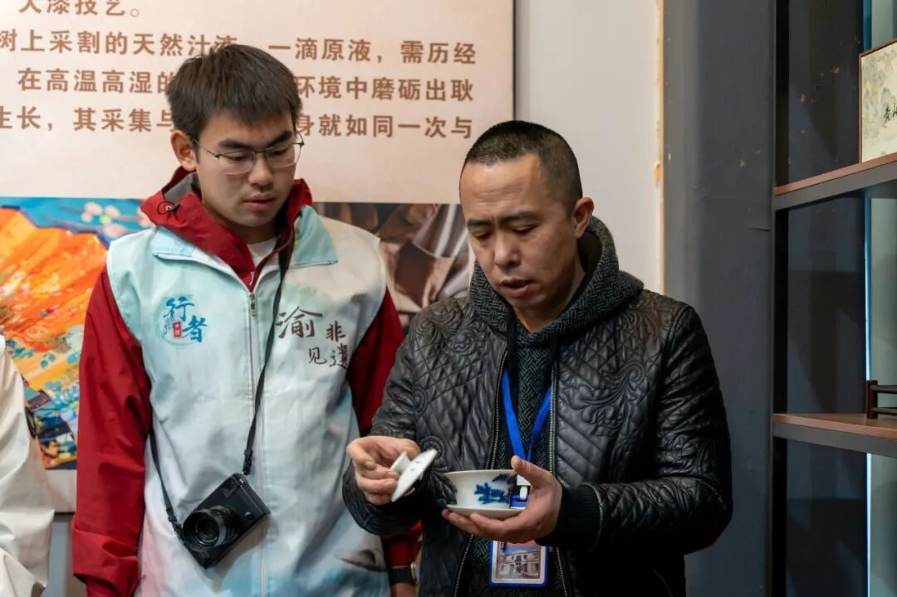
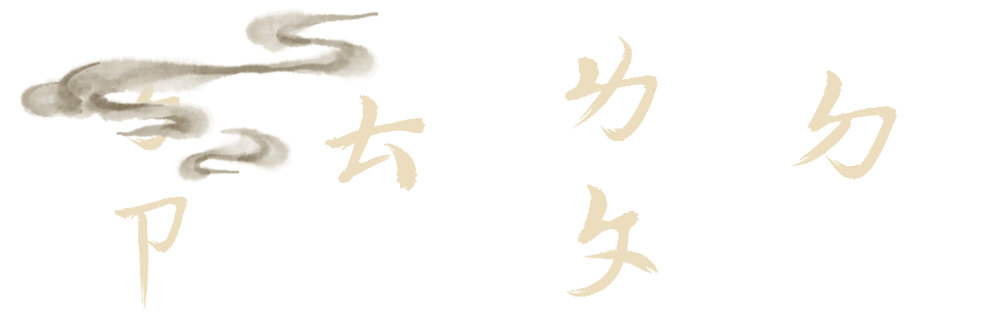
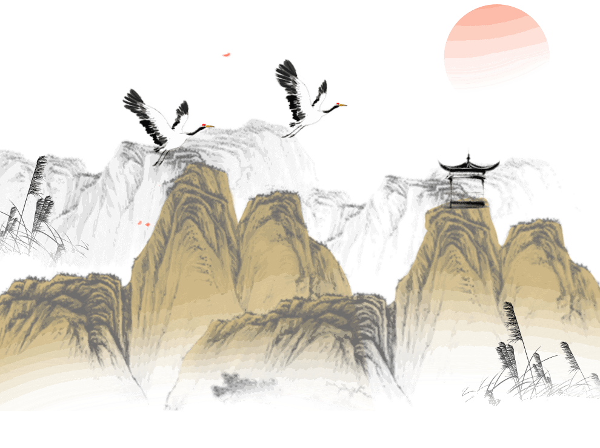
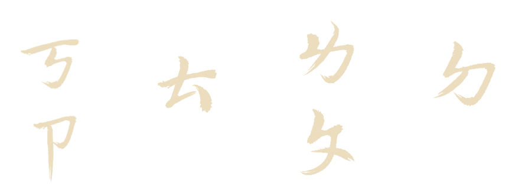
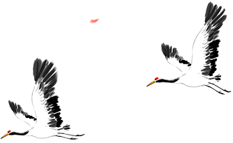
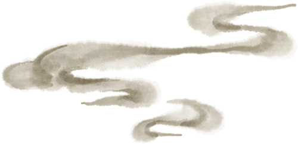
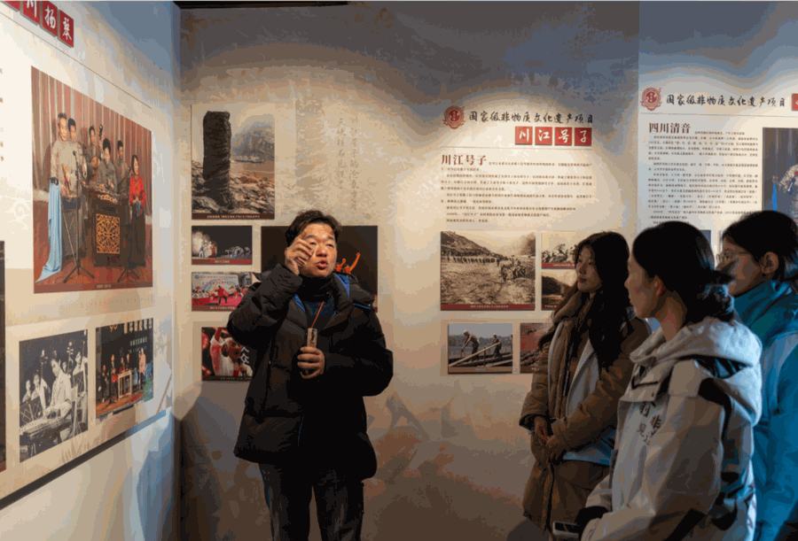
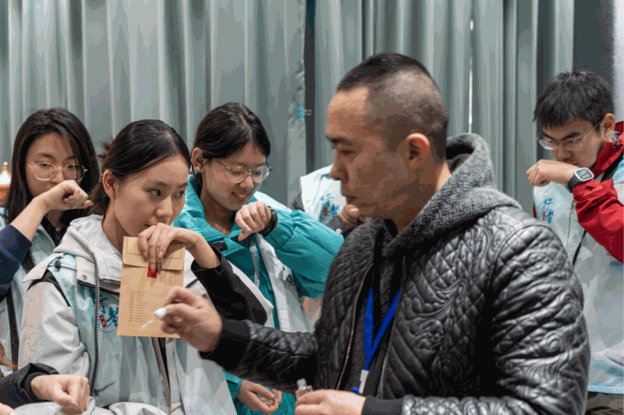
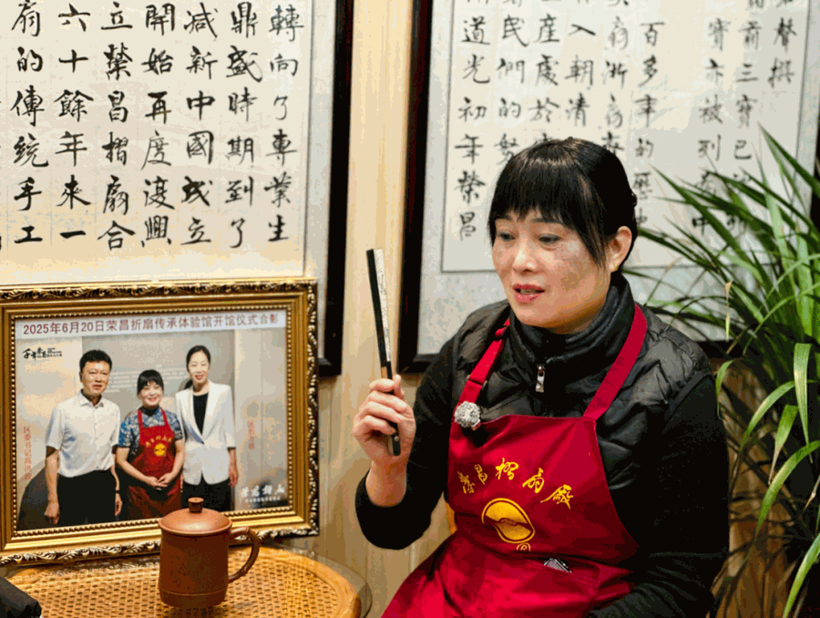
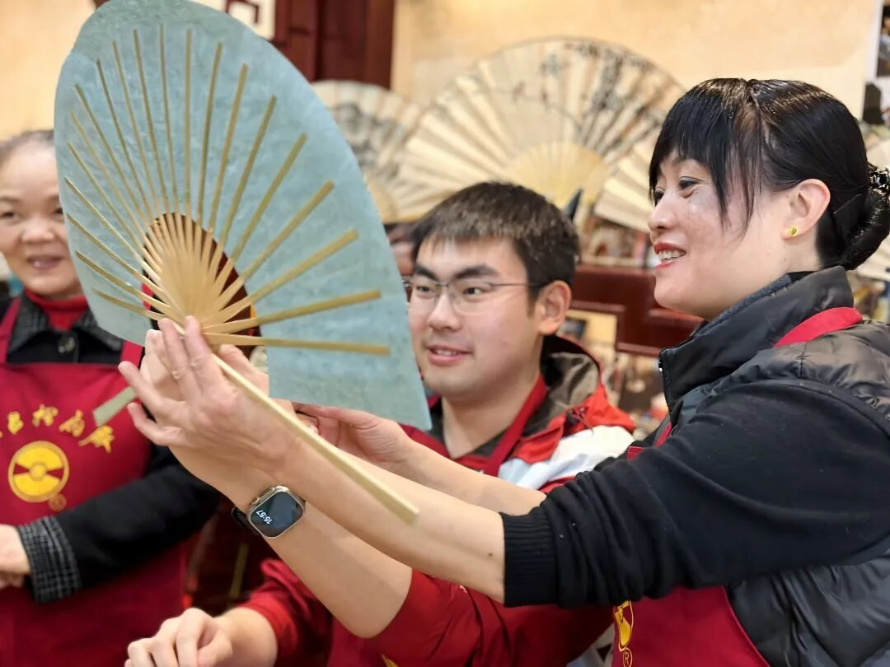

【行者无疆·渝见非遗】个人实践感悟——周子斐



26年寒假，我随“行者无疆”实践团来到重庆，这一次我以调研组成员的身份参与其中，主要任务是观察和记录重庆非遗在传承过程中面临的现实问题。几天的走访里，我们既进入博物馆与非遗场馆，也走进手工作坊与生产空间，与传承人面对面交流。在不断的观察与记录中，我逐渐意识到，非遗不仅是一种文化象征，更是一种仍在现实社会中努力寻找生存方式的传统技艺体系。



在实践开始之前，我负责整理部分背景资料，并在走访过程中重点关注非遗项目在传承、市场与传播层面遇到的困难。进入重庆的几家非遗场馆后，我首先注意到的是展示与保护之间的关系。博物馆中的器物被妥善保存，展陈系统清晰完整，观众能够通过讲解迅速理解技艺的历史脉络。然而，当展柜中的技艺离开实际生产环境后，它们往往更像“被保存的历史”。如何让这些技艺不仅被展示，还能继续在现实生活中运转，这是调研过程中不断被提及的问题。

在重庆母城非遗馆的交流中，一位工作人员谈到当前许多传统手工艺普遍存在的困境：制作周期长、人工成本高，但市场对产品价值的认可度却并不稳定。调研过程中我逐渐意识到，这种价值错位是许多非遗项目面临的共同挑战。传统工艺往往需要复杂的手工流程，但消费者在日常消费时很难理解这些工序背后的时间成本。因此，一些场馆和传承人开始尝试新的方式，例如利用数字技术记录工艺过程，或者通过简化部分流程降低产品成本，从而扩大市场接受度。这些尝试并不意味着放弃传统，而是试图在文化保护与现实经济之间寻找可行路径。
传国风
品古韵

随后在三峡博物馆的参观中，我更加明显地感受到历史与文化之间的延续关系。长江上游地区悠久的文明历史，为当地的民间技艺提供了深厚的文化背景。从早期文化遗存到近代历史文物，不同历史阶段的生活方式在器物中留下了痕迹。而许多非遗技艺正是这些生活方式延续至今的体现，它们记录的不只是技术本身，更是人们在长期生活中积累的经验与审美。
当调研行程转向荣昌时，我开始更多关注具体非遗项目的现实处境。荣昌地区拥有多项国家级非遗项目，但不同技艺的发展状况并不完全相同。
荣昌折扇
在荣昌折扇厂的调研中，传承人向我们讲述了折扇产业在过去几十年中的变化。曾经以手工制作闻名的产业，在工业化生产出现之后迅速失去价格优势。大量机器生产的产品进入市场，使传统手工折扇难以维持原有规模。虽然政府政策和文化保护措施在一定程度上提供了支持，但市场需求的变化仍然对传统产业产生着深远影响。
荣昌陶
在安陶小镇的调研则让我看到了另一种发展路径。荣昌陶在经历产业调整后，逐渐形成了“手工艺与产业化并存”的模式。一部分陶艺作品继续保留传统手工制作方式，用于展示和收藏；另一部分产品则借助机械化生产进入日常消费市场。这种分层发展的方式，在一定程度上缓解了传统工艺与市场需求之间的矛盾，也为技艺保留了更多生存空间。
荣昌夏布
相比之下，夏布技艺的传承状况更为严峻。调研过程中我们了解到，掌握传统织造方法的人数已经非常有限，而愿意长期学习这项技艺的年轻人更少。夏布长期作为其他工艺的配套材料存在，本身缺乏独立的市场认知，因此在现代消费环境中很难获得足够关注。为了改变这种状况，一些年轻的从业者开始尝试新的产品设计，将夏布应用到服饰与生活用品中，通过设计创新提高材料本身的辨识度。这些探索虽然仍处在起步阶段，但为传统技艺提供了新的发展方向。
传国风
品古韵

通过几天的调研，我逐渐意识到，非遗传承所面对的问题往往并不单一。它既涉及技艺学习周期长、从业者减少的问题，也与市场结构、消费习惯以及传播方式密切相关。单纯依靠保护措施很难解决所有问题，而需要文化、产业与社会多方面共同作用。

行者无疆·渝见非遗
这次实践让我对“传承”这个词有了更具体的理解。它不仅意味着保存历史，也意味着让传统在现实社会中继续发挥作用。当一项技艺能够进入新的生活场景，它才真正具备持续发展的可能。对于我们这样的调研者来说，记录问题本身并不是终点，更重要的是通过观察与总结，让更多人看到这些传统技艺所面临的真实处境。
实践结束时，我意识到这次重庆之行带给我的收获远不止几份调研记录。那些仍在坚持工作的匠人、不断尝试新路径的年轻传承人，以及为文化保护付出努力的工作人员，都让我看到了非遗在当代社会继续存在的多种可能。未来如果还有机会再次参与“行者无疆”的实践，我也希望能继续从观察者的角度出发，去理解更多传统文化在新时代中的发展轨迹。
行者无疆
来源 | 行者无疆实践团
文字 | 周子斐
图片 | 行者无疆实践团
编辑 | 刘辰锡
审核 | 刘辰锡
责编 | 邹靓靓 周 亮